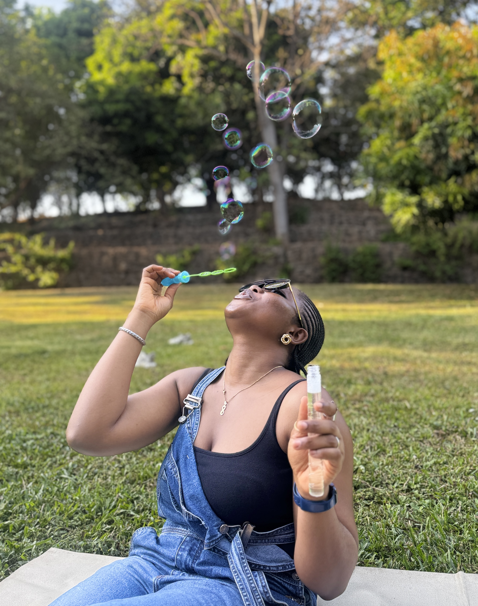

I'm Nkemji, and this is where I write things down.
No fixed topic. Some entries are about product or freelance work, some are about school, some are about nothing in particular — this is a habit I'm rebuilding more than it's a beat I'm covering.
Currently
- Product Working on an EdTech platform, mostly on the associate side — research, specs, and the unglamorous parts of shipping.
- Freelance Hand-coding small, fast websites for founders and creatives who want something that doesn't look like a template. And also, really just for fun.
- Studying Mass communication and media studies, full-time — the theory side of the storytelling I do the rest of the week.
- Reading More of African fiction these days, with the occassional sprinkle of foreign thriller novels. Oh, nurturing a love for historical fiction too!
- Based Splitting time between Nigeria and Ghana, usually with too many tabs open.
Get in touch
If something here resonates, or you're looking for help with product or design work, I'd like to hear from you.
Say hello →